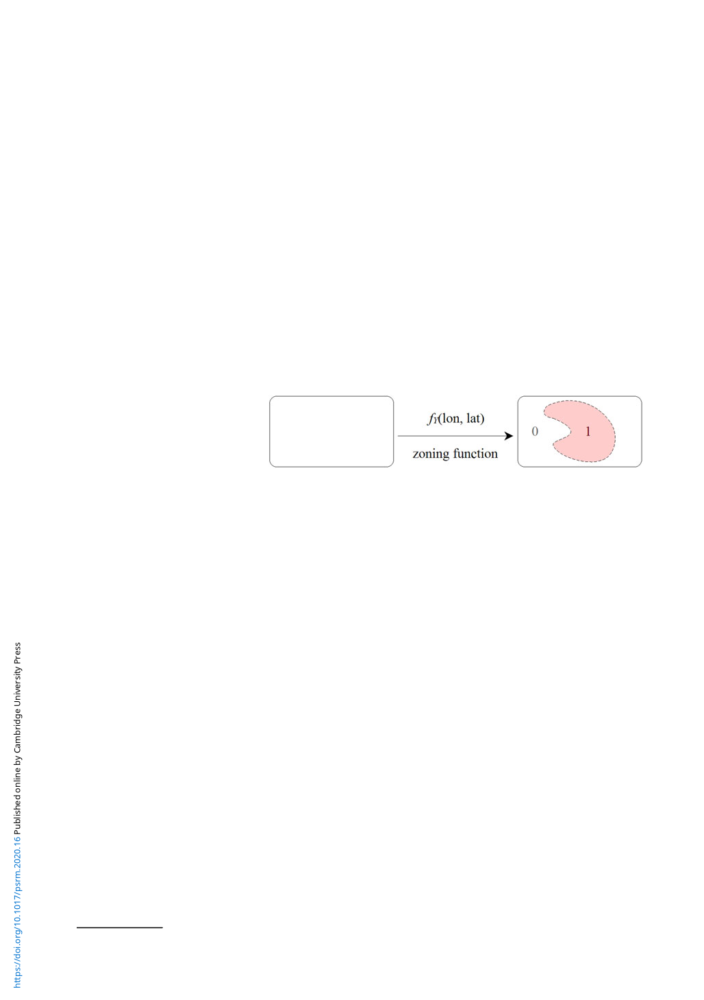

100 Kyosuke Kikuta
1.1 Formalizing a conflict zone
This paper makes a conceptual shift in the geography of civil war; I conceptualize locations as
predictors of conflict instead of units of analysis. This conceptualization allows me to create a
new areal unit – a conflict zone – without assuming any prior areal units. Consider a set of con-
flict events, X = {x1, …, xn:yi = 1 for i = 1, …, n}, where xi is a vector of longitude and latitude (and
if necessary other predictors) of an event i,4 which I call a location, and yi is an indicator of the
presence and absence of conflict. A zoning function fY is a function that maps every location on
the earth to the sample space of Y,
fY :X SY for x [ G,
where G is the entire surface of the globe. Intuitively, as seen in Figure 2, a zoning function tells
us whether each location belongs to a zone of a certain conflict. A conflict zone is an uncountable
set of locations, Ac = {x ∈ G:fY(x) = 1}, and a non-conflict zone is its complement, A¬c = {x ∈ G:
fY(x) = 0}. Our goal is therefore to estimate a zoning function that approximates the population
zoning function and hence best summarizes the conflict events.
Figure 2. Zoning function.
Note: The figure shows a stylized example
of a zoning function that maps every
location to a conflict zone (Y = 1; red
area) and non-conflict zone (Y = 0;
remaining white area).
One advantage of this formalization is that we can now define the fitness of zoning. Let f˜Y be
the population zoning function and fˆY|X be a zoning function estimated from data. The popula-
tion zoning function represents the underlying data generation process of conflict events, while
the estimated zoning function is our estimate of the data generation process. The difference
between the population and estimated zoning functions is then defined by a loss function
L(f˜Y , fˆY|X). Our objective is therefore to find fˆY|X that minimizes the expected value of the
loss function, EX[L(f˜Y , fˆY|X)]. Under certain conditions (Friedman, 1997; Valentini and
Dietterich, 2004), the expected loss function is decomposed into bias and variance terms;
EX[L( fY , ˆf Y|X)] = EX[g(L1( fY , EX[ ˆf Y|X]) , L2( ˆf Y|X, EX[ ˆf Y|X]))],
bias
variance
where g is a generic function that is increasing with L1 and L2. The L1 term represents a systematic
difference between the population and estimated zoning functions (bias), while the L2 term indi-
cates how random noise can alter our estimate (variance). When a zoning function is too inflex-
ible and thus underfitted to data, the zoning function is heavily influenced by our assumptions,
resulting in a large bias. By contrast, when a zoning function is overfitted to data, the function is
extremely sensitive to random noise, indicating a large variance. Thus, estimating the population
zoning function requires striking a delicate balance between bias and variance.
1.2 Fitting problems in deterministic methods
From the bias-variance perspective, deterministic methods of zoning like those commonly used
in conflict studies are suboptimal. In fact, they tend to risk both underfitting and overfitting.
Because those methods impose relatively strong constraints on the zoning function, the estimated
4The examples include the dates of conflict events and geographical characteristics.